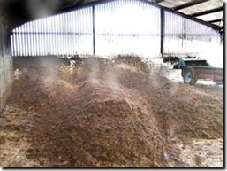
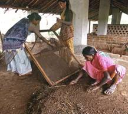
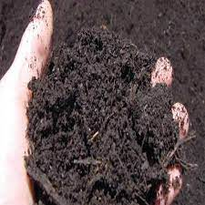

Farmyard manure refers to the decomposed mixture of dung and urine of farm animals along with litter and left over material from roughages or fodder fed to the cattle. On an average well decomposed farmyard manure contains 0.5 per cent N, 0.2 per cent P2O5and .0.5 per cent K2O.The present method of preparing farmyard manure by the farmers is defective. Urine, which is wasted, contains one per cent nitrogen and 1.35 per cent potassium. Nitrogen present in urine is mostly in the form of urea which is subjected to volatilization losses. Even during storage, nutrients are lost due to leaching and volatilization. However, it is practically impossible to avoid losses altogether, but can be reduced by following improved method of preparation of farmyard manure. Trenches of size 6 m to 7.5 m length, 1.5 m to 2.0 m width and 1.0 m deep are dug.
All available litter and refuse is mixed with soil and spread in the shed so as to absorb urine. The next morning, urine soaked refuse along with dung is collected and placed in the trench. A section of the trench from one end should be taken up for filling with daily collection. When the section is filled up to a height of 45 cm to 60 cm above the ground level, the top of the heap is made into a dome and plastered with cow dung earth slurry. The process is continued and when the first trench is completely filled, second trench is prepared.
The manure becomes ready for use in about four to five months after plastering. If urine is not collected in the bedding, it can be collected along with washings of the cattle shed in a cemented pit from which it is later added to the farmyard manure pit. Chemical preservatives can also be used to reduce losses and enrich farmyard manure. The commonly used chemicals are gypsum and superphosphate. Gypsum is spread in the cattle shed which absorbs urine and prevents volatilization loss of urea present in the urine and also adds calcium and sulphur. Superphosphate also acts similarly in reducing losses and also increases phosphorus content.
Partially rotten farmyard manure has to be applied three to four weeks before sowing while well rotten manure can be applied immediately before sowing. Generally 10 to 20 t/ha is applied, but more than 20 t/ha is applied to fodder grasses and vegetables. In such cases farmyard manure should be applied at least 15 days in advance to avoid immobilization of nitrogen. The existing practice of leaving manure in small heaps scattered in the field for a very long period leads toloss of nutrients. These losses can be reduced by spreading the manure and incorporating by ploughing immediately after application.
Vegetable crops like potato, tomato, sweet-potato, carrot, raddish, onion etc., respond well to the farmyard manure. The other responsive crops are sugarcane, rice, napier grass and orchard crops like oranges, banana, mango and plantation crop like coconut.
The entire amount of nutrients present in farmyard manure is not available immediately. About 30 per cent of nitrogen, 60 to 70 per cent of phosphorus and 70 per cent of potassium are available to the first crop.
 Concentrated organic manures have higher nutrient content than bulky organic manure. The important concentrated organic manures are oilcakes, blood meal, fish manure etc. These are also known as organic nitrogen fertilizer. Before their organic nitrogen is used by the crops, it is converted through bacterial action into readily usable ammoniacal nitrogen and nitrate nitrogen. These organic fertilizers are, therefore, relatively slow acting, but they supply available nitrogen for a longer period.
 buy products